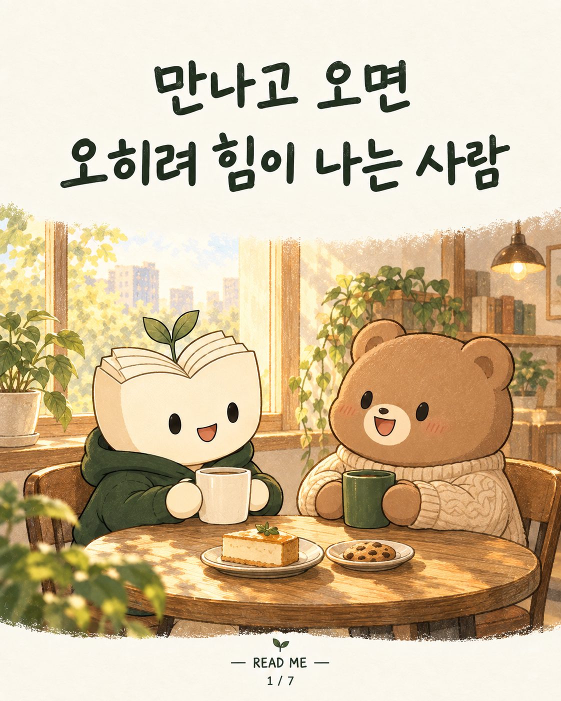
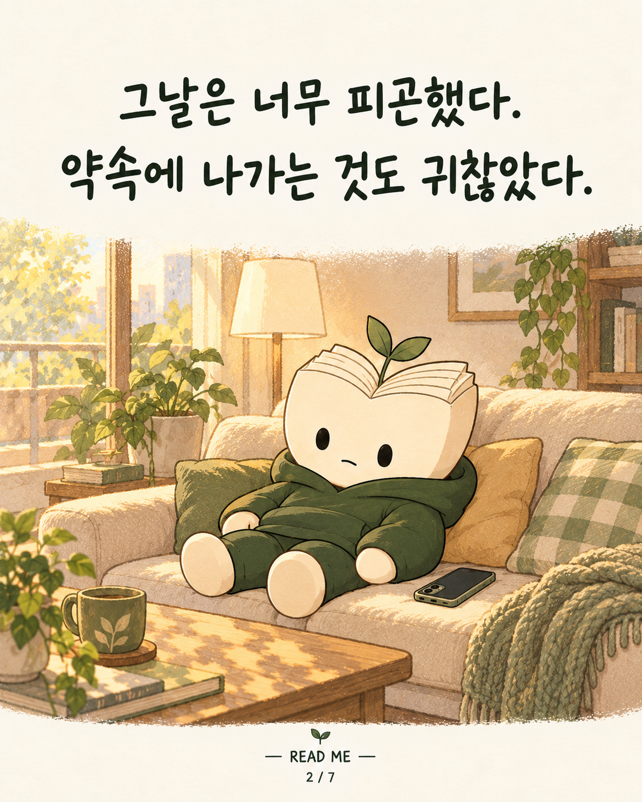
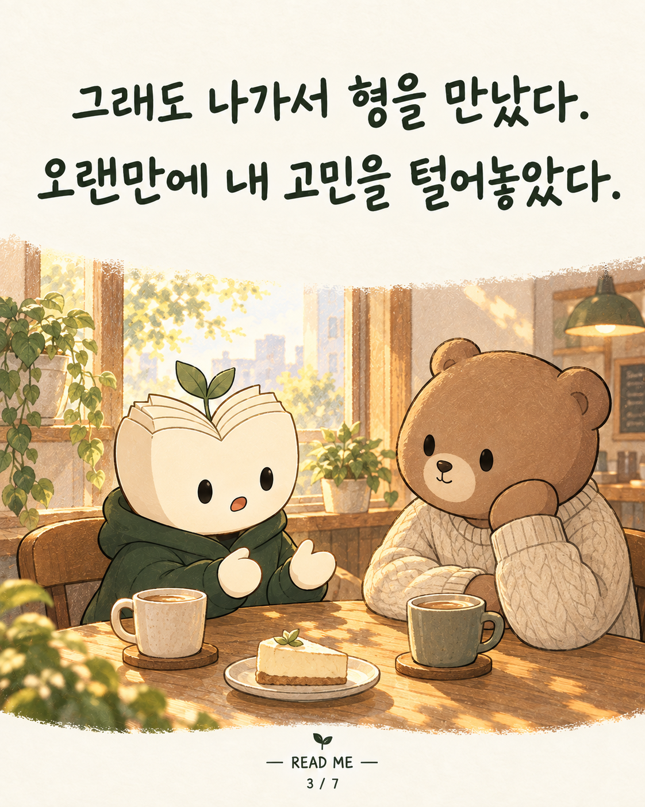
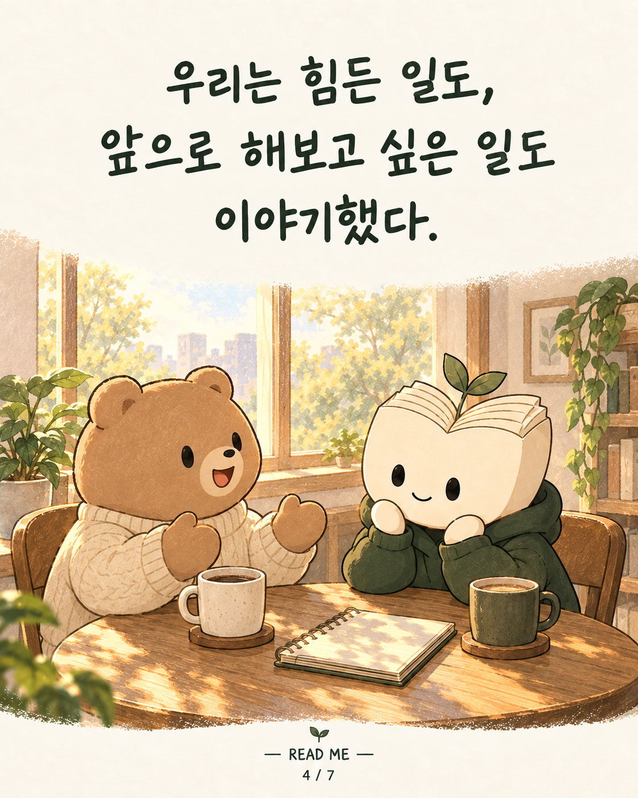
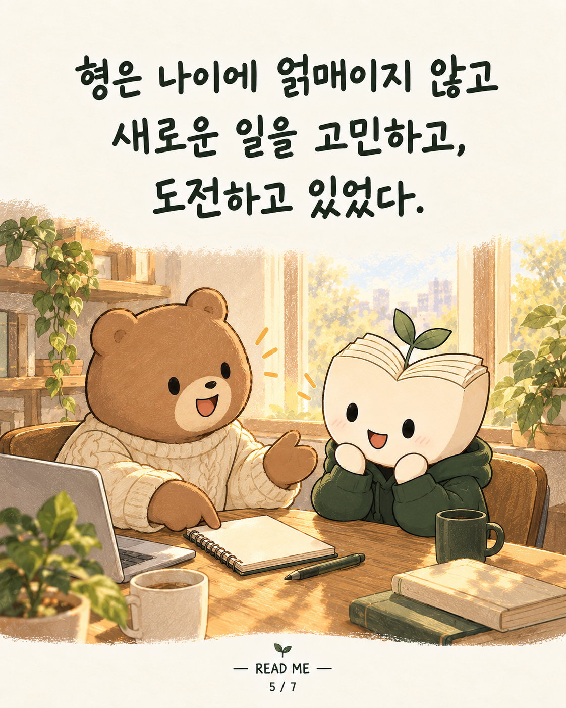
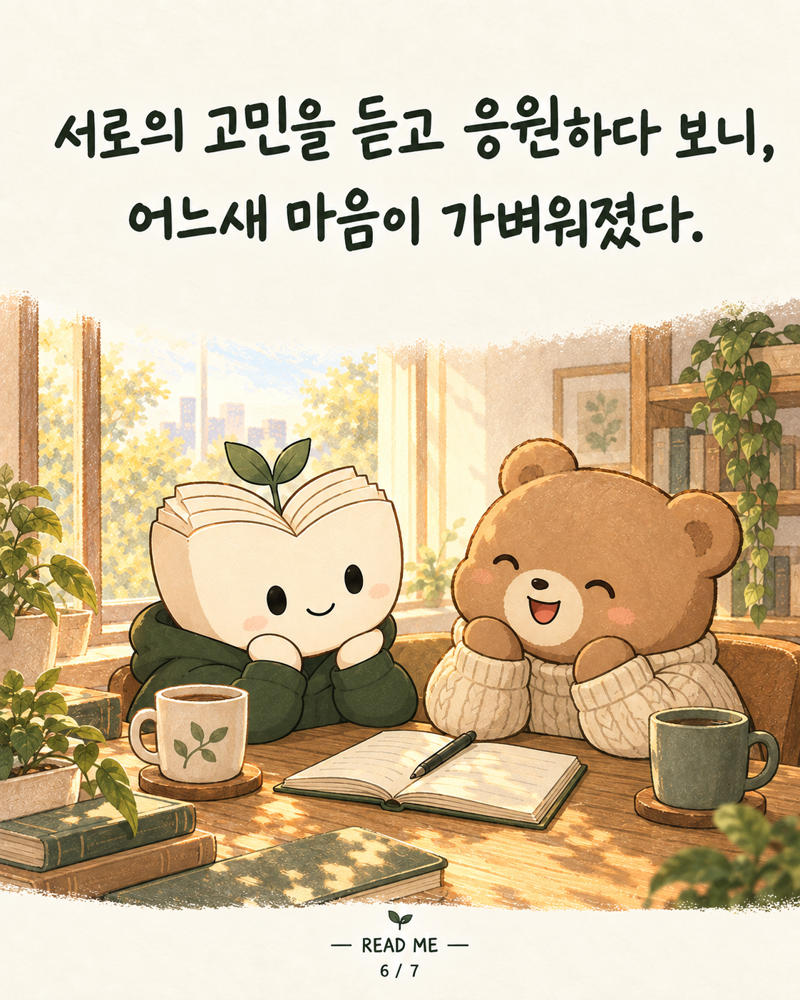
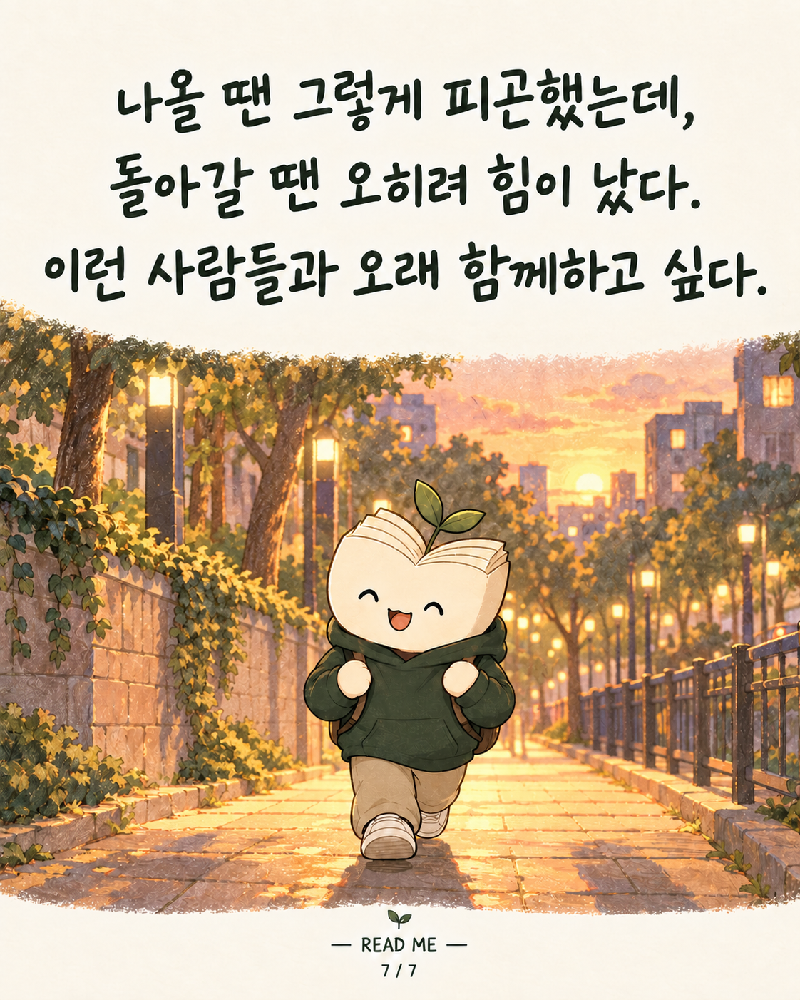

READ ME · 리미 인스타툰 4편

만나고 오면 오히려 힘이 나는 사람

그날은 너무 피곤했다. 약속에 나가는 것도 귀찮았다.

그래도 나가서 형을 만났다. 오랜만에 내 고민을 털어놓았다.

우리는 힘든 일도, 앞으로 해보고 싶은 일도 이야기했다.

형은 나이에 얽매이지 않고 새로운 일을 고민하고, 도전하고 있었다.

서로의 고민을 듣고 응원하다 보니, 어느새 마음이 가벼워졌다.

나올 땐 그렇게 피곤했는데, 돌아갈 땐 오히려 힘이 났다. 이런 사람들과 오래 함께하고 싶다.